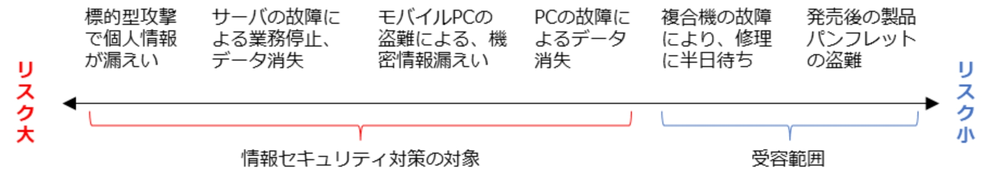

10-2. 【Lv.2 ベースラインアプローチ】ガイドラインを参考とした実施手順
10-2-1. 情報セキュリティ対策ガイドラインの活用
ベースラインアプローチでは、ガイドラインやひな型などの資料を参考に対策基準、実施手順を作成します。次のページから、以下の資料をもとに対策基準、実施手順を作成する流れを説明します。
・IPA「中小企業の情報セキュリティ対策ガイドライン第3.1版」
・NISC「インターネットの安全・安心ハンドブックVer.5.0」
・総務省「テレワークセキュリティガイドライン第5版」
・IPA「中小企業のためのクラウドサービス安全利用の手引き」
・IPA「情報セキュリティ関連規程」
各資料の概要は以下の通りです。
IPA「中小企業の情報セキュリティ対策ガイドライン第3.1版」
「中小企業の情報セキュリティ対策ガイドライン」は、情報セキュリティ対策に取り組む際の、（1）経営者が認識し実施すべき指針、（2）社内において対策を実践する際の手順や手法をまとめたものです。経営者編と実践編で構成されており、中小企業の利用を想定しています。付録の「5分でできる！情報セキュリティ自社診断」や「情報セキュリティハンドブック（ひな形）」を活用することにより、対策基準、実施手順を策定できます。
NISC「インターネットの安全・安心ハンドブックVer.5.0」
「インターネットの安全・安心ハンドブック」は、サイバーセキュリティに関する基本的な知識を、身近な具体例を取り上げながら説明したものです。子供やシニアの方など、インターネットの一般利用者に加えて、中小企業なども活用できます。中小組織向けにある「インターネットの安全・安心ハンドブックVer 5.00＜中小組織向け抜粋版＞」を活用することにより、対策基準、実施手順を策定できます。
総務省「テレワークセキュリティガイドライン第5版」
「テレワークセキュリティガイドライン」は、企業などがテレワークを導入する際のセキュリティ対策についての考え方や対策例を示したものです。テレワークを既に導入している場合は、自社のテレワーク環境がガイドラインに沿ったものであるのか検証できます。テレワークに関する「経営者」、「システム・セキュリティ管理者」、「テレワーク勤務者」の立場からそれぞれのセキュリティ対策について対策基準、実施手順を策定できます。
IPA「中小企業のためのクラウドサービス安全利用の手引き」
「中小企業のためのクラウドサービス安全利用の手引き」は、中小企業の情報セキュリティ対策ガイドラインの付録資料です。クラウドサービスを安全に利用するための手引きが記載されています。「クラウドサービス安全利用チェックシート」と「解説編」を参考にすることにより、クラウドサービス利用に関する対策基準、実施手順を策定できます。
IPA「情報セキュリティ関連規程」
「情報セキュリティ関連規程」は、自社に適した規程を作成するためのひな型です。ひな型に修正を加えることによって、対策基準、実施手順を策定します。1から文書化する必要がないため、効率的に策定できます。
10-2-2. IPA「中小企業の情報セキュリティ対策ガイドライン第3.1版」の活用
対象者
・中小企業および小規模事業者（業種は問わず、法人・個人事業主・各種団体も含む）の経営者と情報管理を統括する方
・セキュリティ対策を部分的に実施してきた企業
・情報セキュリティに関する知識を十分に有した人材が不足している企業など
・セキュリティ対策を部分的に実施してきた企業
・情報セキュリティに関する知識を十分に有した人材が不足している企業など
目的
・情報セキュリティに関する組織的な取組を開始するため
本ガイドラインは、情報セキュリティに関する組織的な取組を行う際に活用できます。
本ガイドラインをもとに実施手順を策定する際は、「1. 実施状況の把握」「2. 対策の決定と周知」の手順で策定します。
1.実施状況の把握
「5分でできる！情報セキュリティ自社診断」を利用し、現在のセキュリティ対策の実施状況を把握します。合計25問の設問に答えるだけでセキュリティ対策の実施状況が把握できます。設問の例（一部抜粋）は以下の通りです。
【診断項目】Part1 基本的対策
【No.1】パソコンやスマホなど情報機器のOSやソフトウェアは常に最新の状態にしていますか？実施している：4
一部実施している：2
実施していない：0
分からない：-1
一部実施している：2
実施していない：0
分からない：-1
【No.3】パスワードは破られにくい「長く」「複雑な」パスワードを設定していますか？
実施している：4
一部実施している：2
実施していない：0
分からない：-1
一部実施している：2
実施していない：0
分からない：-1
【No.4】重要情報に対する適切なアクセス制限を行っていますか？
実施している：4
一部実施している：2
実施していない：0
分からない：-1
一部実施している：2
実施していない：0
分からない：-1
【No.5】新たな脅威や攻撃の手口を知り対策を社内共有する仕組みはできていますか？
実施している：4
一部実施している：2
実施していない：0
分からない：-1
一部実施している：2
実施していない：0
分からない：-1
自社診断の設問（一部抜粋）
(出典) IPA「5分でできる！情報セキュリティ自社診断」をもとに作成
「5分でできる！情報セキュリティ自社診断」の使い方
✓ 経営者や情報システム担当者、部門長などセキュリティ対策の実施状況がわかる方が、25問の設問に回答します。
✓ 事業所が複数ある、部署数が多いなど、1人で記入することが難しい場合には、事業所や部署ごとに記入し、責任者・担当者が集計します。
✓ 実施状況がわからない場合、各従業員に質問して、回答を総合して記入します。
✓ チェック欄の該当するもの1つに〇をつけて、「実施している…4点」「一部実施している…2点」「実施していない…0点」「分からない…-1点」で採点します。
✓ 全項目の合計点で、組織全体のセキュリティ対策の実施状況と、回答が「分からない」になっている項目を把握します。
✓ 事業所が複数ある、部署数が多いなど、1人で記入することが難しい場合には、事業所や部署ごとに記入し、責任者・担当者が集計します。
✓ 実施状況がわからない場合、各従業員に質問して、回答を総合して記入します。
✓ チェック欄の該当するもの1つに〇をつけて、「実施している…4点」「一部実施している…2点」「実施していない…0点」「分からない…-1点」で採点します。
✓ 全項目の合計点で、組織全体のセキュリティ対策の実施状況と、回答が「分からない」になっている項目を把握します。
2.対策の決定と周知
診断結果をもとに「5分でできる！情報セキュリティ自社診断」（解説編）を参考にし、実行すべきセキュリティ対策を検討・決定します。解説編の例（抜粋）は以下の通りです。
【診断編 No.3】パスワード管理
強固なパスワードを使用するパスワードが推測や解析されたり、Webサービスから流出したID・パスワードが悪用されたりすることで、不正にログインされる被害が増えています。パスワードは「長く」、「複雑に」、「使い回さない」ようにして強化しましょう。
対策例パスワードは10文字以上で「できるだけ長く」、大文字、小文字、数字、記号含めて「複雑に」、名前、電話番号、誕生日、簡単な英単語などは使わず、推測できないようにする。
同じID・パスワードを複数サービス間で使い回さない。
テレワークでVPNやクラウドサービスを利用する際は、強固なパスワードを設定し、可能な場合は多段階認証や多要素認証を利用する。
同じID・パスワードを複数サービス間で使い回さない。
テレワークでVPNやクラウドサービスを利用する際は、強固なパスワードを設定し、可能な場合は多段階認証や多要素認証を利用する。
解説編の一例
(出典) IPA「5分でできる！情報セキュリティ自社診断」をもとに作成
「5分でできる！情報セキュリティ自社診断」（解説編）の使い方
✓ セキュリティ対策の検討と決定は、責任者・担当者と経営者が行います。
✓ 診断項目ごとにセキュリティ対策を実施しない場合に考えられる被害・事故や、防止するためのセキュリティ対策例を参考にして検討します。
✓ 検討するときには従業員の意見を聞き、職場環境や業務に適したセキュリティ対策を決定します。
✓ 診断項目ごとにセキュリティ対策を実施しない場合に考えられる被害・事故や、防止するためのセキュリティ対策例を参考にして検討します。
✓ 検討するときには従業員の意見を聞き、職場環境や業務に適したセキュリティ対策を決定します。
セキュリティ対策の決定後、「情報セキュリティハンドブック（ひな形）」を利用し、従業員が実行するべき事項を周知します。情報セキュリティハンドブック（ひな形）は、自社診断の解説編に記載されているセキュリティ対策例と連動しています。ひな型を編集して決定したセキュリティ対策の内容を具体的に記述し、従業員に配付します。ひな型の記載例は以下の通りです。
実施手順の例：パスワードの管理
ログインやファイル暗号化に使うパスワードは、以下に従って設定・利用する。
編集前（ひな型）
〇必須
10
文字以上の文字数で構成されている
×禁止
名前・愛称・地名・電話番号・生年月日・辞書に載っている単語・よく使われるフレーズ
は使わない
編集後
〇必須
16
文字以上の文字数で構成されている
×禁止
従業員番号・名前・住所・電話番号・生年月日・辞書に載っている単語・他人に推測されやすい文字列
は使わない
ひな形の修正例
(出典) IPA「情報セキュリティハンドブック（ひな形）」をもとに作成
「情報セキュリティハンドブック（ひな形）」の使い方
✓ 情報セキュリティハンドブックは、責任者・担当者が作成します。
✓ ひな型に記載された例文を編集して、決定したセキュリティ対策を社内ルールとして明文化します。
✓ 完成した情報セキュリティハンドブックを全従業員に配付し、必要に応じて説明する機会を設けるなどして、セキュリティ対策を周知徹底します。
✓ ひな型に記載された例文を編集して、決定したセキュリティ対策を社内ルールとして明文化します。
✓ 完成した情報セキュリティハンドブックを全従業員に配付し、必要に応じて説明する機会を設けるなどして、セキュリティ対策を周知徹底します。
詳細理解のため参考となる文献（参考文献）
10-2-3. NISC「インターネットの安全・安心ハンドブックVer.5.0」の活用
対象者
・全従業員
目的
一人一人が能動的にサイバー空間における脅威を知り、サイバーセキュリティに対する素養・基本的な知識を身につけるため
本ハンドブックは、サイバー攻撃の手口やリスクを身近な具体例を取り上げながら説明しているため、専門知識を必要とせずセキュリティ対策を知ることができます。インターネットの利用者が実施すべき基本的なセキュリティ対策に加えて、中小組織向けのセキュリティ対策を記載しています。企業経営においてセキュリティ対策に投資すべき理由、企業特有のセキュリティ対策に必要なルール作りといった内容を説明しています。
以下では、第1章の「最低限実施すべきサイバーセキュリティ対策を理解しよう」を用いて、実施手順の作り方を説明します。
以下では、第1章の「最低限実施すべきサイバーセキュリティ対策を理解しよう」を用いて、実施手順の作り方を説明します。
（例）①OSやソフトウェアは常に最新の状態にしておこう
インターネットの安全・安心ハンドブック記載・OS関連のアップデート処理は自動で行われるか、アップデートを行うよう通知が出るようにする。
・セキュリティ関連ニュースサイトなどでアップデートを促す情報が流れていたら、自主的に更新処理をかけるようにする。
・サイバー攻撃で狙われやすいソフトウェアを重点的に更新する。
・機器そのものの基本プログラムを更新するファームウェアもアップデートする。
・セキュリティソフトをインストールしている場合は、最新のウイルス定義ファイルに自動更新されるよう設定する。
・アップデートが提供されなくなったOSやソフトウェアはセキュリティホールが見つかっても修正用アップデートが提供されず、攻撃に対して非常に脆弱なので、使用しないようにする。自社の状況・OS、セキュリティソフトは法人向けを利用しているため、アップデート管理は情報システム部が担当。
・情報システム部がブラウザは古いバージョンを使わないように通知している。
・自宅で使用しているリモート用PCは、一般向けのソフトウェアがインストールされている。
・セキュリティ関連ニュースサイトなどでアップデートを促す情報が流れていたら、自主的に更新処理をかけるようにする。
・サイバー攻撃で狙われやすいソフトウェアを重点的に更新する。
・機器そのものの基本プログラムを更新するファームウェアもアップデートする。
・セキュリティソフトをインストールしている場合は、最新のウイルス定義ファイルに自動更新されるよう設定する。
・アップデートが提供されなくなったOSやソフトウェアはセキュリティホールが見つかっても修正用アップデートが提供されず、攻撃に対して非常に脆弱なので、使用しないようにする。自社の状況・OS、セキュリティソフトは法人向けを利用しているため、アップデート管理は情報システム部が担当。
・情報システム部がブラウザは古いバージョンを使わないように通知している。
・自宅で使用しているリモート用PCは、一般向けのソフトウェアがインストールされている。
実施手順
対象：PCシステム管理者は、アップデート管理として以下を実施する。
・システム管理者は月末にOS、セキュリティソフトの更新プログラムを適用する。緊急な場合は、従業員に通知し、更新プログラムを適用する。
・従業員は、毎月OS、セキュリティソフトの更新プログラムを適用する。確認方法はチェックリストを用いる。
・従業員は、ブラウザのアップデートを適宜行い、バージョン○○以前のものは使用しない。
・システム管理者は〇〇日にセキュリティソフトのウイルス定義ファイルの更新を行う。
・システム管理者は月末にOS、セキュリティソフトの更新プログラムを適用する。緊急な場合は、従業員に通知し、更新プログラムを適用する。
・従業員は、毎月OS、セキュリティソフトの更新プログラムを適用する。確認方法はチェックリストを用いる。
・従業員は、ブラウザのアップデートを適宜行い、バージョン○○以前のものは使用しない。
・システム管理者は〇〇日にセキュリティソフトのウイルス定義ファイルの更新を行う。
詳細理解のため参考となる文献（参考文献）
10-2-4. 総務省「テレワークセキュリティガイドライン第5版」の活用
対象者
・経営者
・システム・セキュリティ管理者
・テレワーク勤務者
・システム・セキュリティ管理者
・テレワーク勤務者
目的
テレワークを業務に活用する際のセキュリティ上の不安を払拭し、安心してテレワークを導入・活用するため
本ガイドラインでは、セキュリティ対策を整理するため、13個の対策分類にわかれています。「経営者」、「システム・セキュリティ管理者」、「テレワーク勤務者」の立場から対策分類ごとに具体的に実施すべき事項を示しています。以下では、「6.マルウェア対策」をもとに自社の状況からセキュリティ対策の実施手順の作成例を説明します。
（例）6. マルウェア対策
システム・セキュリティ管理者が実施すべき対策・テレワーク端末にセキュリティ対策ソフト（ウイルス対策ソフト）をインストールし、定義ファイルの自動更新やリアルタイムスキャンが行われるようにする。
・セキュリティ対策ソフト（ウイルス対策ソフト）やメールサービスに付属しているフィルタリング機能やフィッシング対策機能などを用いて、テレワーク勤務者がマルウェアの含まれたファイルを開いたり、危険なサイトにアクセスしたりしないように設定する。
・テレワーク端末にEDRを導入し、未知のマルウェアを含めた不審な挙動を検知し、マルウェア感染後の対応を迅速に行えるようにする。
・テレワーク勤務者が利用するテレワーク端末のセキュリティ対策ソフト（ウイルス対策ソフト）について、定義ファイルの更新状況やマルウェアの検知状況が一元管理できるようにする。 テレワーク勤務者が実施すべき対策・少しでも不審を感じたメール（添付ファイルやURLリンクなどを含む。）は開かず、必要に応じて送信者に送信状況の確認を行うほか、システム・セキュリティ管理者へ速やかに報告する。報告の是非について判断に迷う場合は報告することを心がける。
・テレワーク端末にセキュリティ対策ソフト（ウイルス対策ソフト）をインストールし、定義ファイルの自動更新やリアルタイムスキャンが行われるようにする。 自社の状況・テレワーク端末には、法人向けのセキュリティ対策ソフトとEDRを導入しており、システム管理者はウイルス定義ファイルの更新などを一元管理できる。
・システム管理者は毎月○○日にセキュリティソフトのレポートを確認している。
・不審なメールが来た場合は、情報システム部と上長に連絡するようにしている。
・セキュリティ対策ソフト（ウイルス対策ソフト）やメールサービスに付属しているフィルタリング機能やフィッシング対策機能などを用いて、テレワーク勤務者がマルウェアの含まれたファイルを開いたり、危険なサイトにアクセスしたりしないように設定する。
・テレワーク端末にEDRを導入し、未知のマルウェアを含めた不審な挙動を検知し、マルウェア感染後の対応を迅速に行えるようにする。
・テレワーク勤務者が利用するテレワーク端末のセキュリティ対策ソフト（ウイルス対策ソフト）について、定義ファイルの更新状況やマルウェアの検知状況が一元管理できるようにする。 テレワーク勤務者が実施すべき対策・少しでも不審を感じたメール（添付ファイルやURLリンクなどを含む。）は開かず、必要に応じて送信者に送信状況の確認を行うほか、システム・セキュリティ管理者へ速やかに報告する。報告の是非について判断に迷う場合は報告することを心がける。
・テレワーク端末にセキュリティ対策ソフト（ウイルス対策ソフト）をインストールし、定義ファイルの自動更新やリアルタイムスキャンが行われるようにする。 自社の状況・テレワーク端末には、法人向けのセキュリティ対策ソフトとEDRを導入しており、システム管理者はウイルス定義ファイルの更新などを一元管理できる。
・システム管理者は毎月○○日にセキュリティソフトのレポートを確認している。
・不審なメールが来た場合は、情報システム部と上長に連絡するようにしている。
実施手順
テレワーク端末のマルウェア対策として以下を実施する。・システム管理者は会社支給のテレワーク端末にセキュリティ対策ソフトとEDRをインストールし、一元管理する。
・システム管理者は、テレワーク端末のウイルス定義ファイルの自動更新とリアルタイムスキャンを設定する。
・システム管理者は毎月○○日にセキュリティソフトとEDRのレポートを確認し、不審な点があれば該当のテレワーク端末所有者に対して、確認を行う。
・従業員は、不審を感じたメール（添付ファイルやURLリンクなどを含む。）は開かず、システム管理者と上長へ連絡する。
・システム管理者は、テレワーク端末のウイルス定義ファイルの自動更新とリアルタイムスキャンを設定する。
・システム管理者は毎月○○日にセキュリティソフトとEDRのレポートを確認し、不審な点があれば該当のテレワーク端末所有者に対して、確認を行う。
・従業員は、不審を感じたメール（添付ファイルやURLリンクなどを含む。）は開かず、システム管理者と上長へ連絡する。
詳細理解のため参考となる文献（参考文献）
10-2-5. IPA「中小企業のためのクラウドサービス安全利用の手引き」の活用
対象者
・クラウドサービスを利用する企業
目的
クラウドサービスを安全に利用するため
本ガイドラインは、クラウドサービスを安全に利用するために活用できるガイドラインです。「利用するクラウドサービスを選定するとき」、「クラウドサービスを運用していくとき」、「クラウドサービスのセキュリティ対策を検討するとき」のタイミングで活用することができます。本ガイドラインの使い方としては、「クラウドサービス安全利用チェックシート」でチェックを行います。また、「解説編」を参考に、利用者としての役割や責任を認識し、実施手順を策定します。
以下は、クラウドサービスの運用に関する設問例となります。
以下は、クラウドサービスの運用に関する設問例となります。
運用するときのポイント
管理担当者を決めるクラウドサービスの特性を理解した管理担当者を社内に確保していますか？
利用者の範囲を決めるクラウドサービスを適切な利用者のみが利用可能となるように管理できていますか？
利用者の認証を厳格に行うパスワードなどの認証機能について適切に設定・管理は実施できていますか？（共有しない、複雑にするなど）
バックアップに責任を持つサービス停止やデータの消失・改ざんなどに備えて、重要情報を手もとに確保して必要なときに使えるようにしていますか？
解説編をもとに実施手順を作成します。以下は、チェックシートの設問「バックアップに責任を持つ」の実施手順（例）を記載します。自社の状況に合わせて赤文字の箇所を修正することによって、自社に適した実施手順を作成できます。
詳細理解のため参考となる文献（参考文献）
10-2-6. IPA「情報セキュリティ関連規程」の活用
対象者
・中小企業
目的
自社のリスクに応じたセキュリティ対策の規程を作成するため
情報セキュリティ関連規程とは、自社が対応すべきリスクとセキュリティ対策を検討し、文書化した規程のことです。企業をとりまくリスクは、事業内容や取扱う情報、職場環境、ITの利用状況などによって異なるため、汎用的な規程をそのまま使っても、自社に適さない場合があります。そこで情報セキュリティ関連規程を活用することによって、効率的に自社に適した規程を作成できます。
本ガイドラインを用いて、規程を作成する手順を説明します。
本ガイドラインを用いて、規程を作成する手順を説明します。
1.対応すべきリスクを特定する
経営者が懸念する情報セキュリティの重大事故などを念頭に、何を起こさないようにするべきかを考えます。このとき、以下のような状況を併せて考えることにより、対応すべきリスクを把握します。
関連する業務や情報に関わる外部状況（法律や規制、情報セキュリティ事故の傾向、取引先からの情報セキュリティに関する要求事項など）、内部状況（経営方針・情報セキュリティ方針、セキュリティ管理体制、情報システムの利用状況など）
2.セキュリティ対策の決定
すべてのリスクに対応しようとすると、セキュリティ対策費用が高額になったり、業務に支障をきたしたりする場合があります。そこで、いつ事故が起きてもおかしくない、事故が起きると大きな被害になるなど、リスクが大きなものを優先してセキュリティ対策を実施します。また、事故が起きる可能性が小さい、発生しても被害が軽微であるなど、リスクが小さなものは、現状のまま受容するなど、合理的に対応します。

3.規程の作成
「2．セキュリティ対策の決定」で対象としたリスクに対してセキュリティ対策を実施するため、文書化した規程を作成します。「中小企業の情報セキュリティ対策ガイドライン 付録5 情報セキュリティ関連規程（サンプル）」を編集することによって、規程を作成することができます。以下では、「サーバの故障による業務停止、データ消失」に対するセキュリティ対策を文書化した規程の例を記載します。赤文字の箇所を修正することにより、自社に適した規程を作成します。
3情報資産管理（改訂：20yy.mm.dd）
適用範囲全社・全従業員
バックアップ
バックアップ取得対象
方法：
保管先：
方法：
保管先：
方法：
保管先：
バックアップに利用した機器および媒体の取扱いは以下に従う。
＜保管＞
バックアップ取得対象
システム管理者
は、以下の機器で処理するデータのバックアップを定期的に取得する。
【機器名】ファイルサーバ
対象：ユーザーファイル
方法：
アプリケーションバックアップ機能
保管先：
NASサーバ
【機器名】Webサーバ
対象：ホームページ
方法：
同期ツール
保管先：
NASサーバ
【機器名】会計システム
対象：アプリケーションデータ
方法：
アプリケーションバックアップ機能
保管先：
クラウドバックアップサービス
バックアップ媒体の取扱いバックアップに利用した機器および媒体の取扱いは以下に従う。
＜保管＞
・NASサーバ：施錠つきサーバラックに収納
情報セキュリティ関連規程の一例
(出典) IPA「情報セキュリティ関連規程（サンプル）」をもとに作成
3情報資産管理（改訂：20yy.mm.dd）
適用範囲全社・全従業員
バックアップ
バックアップ取得対象
システム管理者は、以下の機器で処理するデータのバックアップを定期的に取得する。
方法：
保管先：
方法：
保管先：
方法：
保管先：
バックアップに利用した機器および媒体の取扱いは以下に従う。
＜保管＞
バックアップ取得対象
システム管理者は、以下の機器で処理するデータのバックアップを定期的に取得する。
【機器名】DBサーバ
対象：取引先に関するデータ
方法：
アプリケーションバックアップ機能
保管先：
自社サーバ
【機器名】Webサーバ
対象：ホームページ
方法：
同期ツール
保管先：
自社サーバ
【機器名】発注管理システム
対象：アプリケーションデータ
方法：
アプリケーションバックアップ機能
保管先：
クラウドサービス上のサーバ
バックアップ媒体の取扱いバックアップに利用した機器および媒体の取扱いは以下に従う。
＜保管＞
・自社サーバ：ハウジングサービスを利用し、サービス事業者の施設内に保管する
詳細理解のため参考となる文献（参考文献）